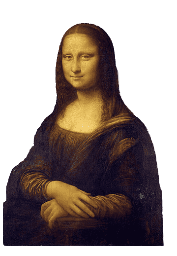

While the Renaissance has had a monumental influence over the modern world today, not all of its effects are positive. The Black Plague peaked around the mid-13th century, killing an estimated third of Europe. Humanism started spreading throughout Europe, shifting the cultural focus away from God to man.
The Renaissance was a pivotal period in European history that revived art, literature, and music while introducing new technologies like the printing press and bridging the gap between the Middle Ages and modern civilization. However, the Black Plague and the rise of humanism were very dark spots during the Renaissance. Despite these negative effects, the Renaissance remains a pivotal moment in European history, leaving a lasting impact on society and culture that is still felt today
